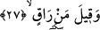

can, ruhtur. Her ne kadar daha önce ruh/can diye bir kelime geçmemişse de maksad
odur. Burada olduğu gibi herhangi bir cümle içerisinde daha önce geçmeyen bir kelime
yerine zamir kullanılması Arapçada rastlanılan hususlardandır. Söz gelimi Araplar
“erselet/gönderdi” derler ve bununla; “yağmur geldi” demek isterler. Arapların
konuşma tarzlarında hemen hemen fâil olan kelimeden -burada semâ- bahsettiklerini
duyamazsın.
Üzerinde durduğumuz âyete gelelim. Burada Allah şöyle demiş oluyor: Nefs-i nâtıkâ;
yâni insan ruhu göğsün üst kısımlarına bir başka ifâdeyle sağdan ve soldan göğüs kafesi
üzerinde bulunan kemiğe ulaştığında artık vakit hırıltının çöktüğü vakittir. Bâzı âlimler
şöyle derler: Her insanın iki adet -sağlı sollu- göğüs kafesi boşluğu vardır. Ancak âyette
kelime “ikil” değil de çoğul getirilmiştir çünkü tek tek fertler itibara alınmıştır.
Rûhun göğsün üst tarafına çıkması, ulaşması demek, kişinin artık şifâ bulmayacağının
kinâye yoluyla anlatımı demektir.
Bu açıklamalardan sonra âyet-i kerîmeye bir kez daha mânâ vermek gerekirse şöyle
denilebilir: “Ruh hulkûme yükseldiğinde ve Allah’ın yükselmesini irâde ve emir
buyurduğu yere sevkedildiğinde...”
27. «Tedâvi edebilecek kimdir?» denir.
Yâni “rukye ile tedâvi edip o kişiyi kurtarabilecek kim?” denilir. Rukye şifâ
sağlayacak ta’viz demektir. Söz gelimi; “bismillahi erkîke/Allah’ın adı ile sana rukye
yapıyorum” demek bir ta’vizdir.
Bu açıklamaya göre âyetteki “soru” ya “talep” mânâsına, ya da “inkâr” anlamınadır.
Talep anlamına alacak olursak; can vermekte olan o kimsenin etrafında yer alan insanlar
sanki onu tedâvi edecek bir doktor, bu işlerden anlayıp kendisine rukye yapabilecek bir
kişi aramakta ve bu nedenle “bu hastayı tedâvî edebilecek kim” demektedirler.
İstifhâmın inkârî olabileceğini de söyledik. Bu takdirde âyetin mânâsı: “Yeis hâlindeki
ölümü yaklaşmış olana kim rukye yapabilir?” şeklinde olur ki, hiç kimse rukye yapamaz
demektir. Âyetin zâhirî mânâsı da budur.
Nitekim Râğıb İsfahânî bu âyeti şöyle anlar: Can köprücük kemiklerine dayandığında
“rukye yapabilecek kim?” denilir. Böylece o kişiye rukye yapıp kendisini kurtarabilecek
ve tekrar hayata döndürebilecek hiç kimsenin olamayacağına dikkat çekilmektedir.
Yapılan bu tefsir şâirin şu mısralarda ifâde ettiği anlama işâret ediyor gibidir:
Tırnağını geçirdi mi ölüm yakana bir kez,
Fayda vermez hiçbir muska bu kez.